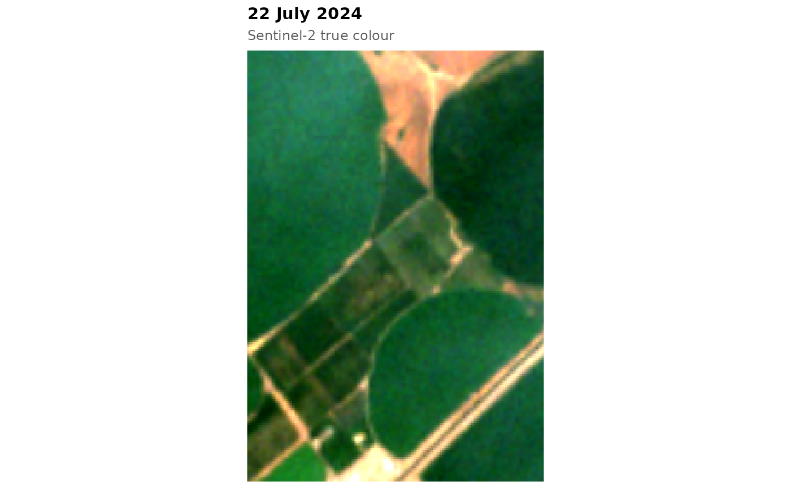

Small Sentinel-2 time series (for each month, the scene with the fewest invalid pixels in
the tile that holds the window; ten bands, resampled to the Fields of The World grid of about
5 m, about 1 km across) of four agricultural landscapes, with the output of the PRUE
deep model for the same window (fb_prue_predict() on the example stack), the Fields of
The World global field map of the same year where available, and reference field
polygons where their licence allows redistribution:
Usage
fb_example_files(name = fb_example_names())
fb_example_stack(name = fb_example_names())
fb_example_bands()
fb_example_names()Value
fb_example_files(): a list with the image and clear-mask files, the dates,
and the paths of the reference fields (fields), PRUE probabilities (prue) and
FTW map (ftw); missing items are NULL. fb_example_stack(): an fb_stack.
fb_example_bands(): the band names of the example images. fb_example_names():
the example names.
Details
"california": Colusa County, Sacramento Valley, USA, 2024: rice, orchards and row crops. Reference fields from the California Department of Water Resources Statewide Crop Mapping 2024 (CC0-1.0). PRUE months March and July."washington": Columbia Basin, Washington, USA: centre-pivot and rectangular irrigated fields. PRUE months March and July."brazil": Tocantins, Brazil, season July 2019 to June 2020: large summer-crop fields in the Cerrado. PRUE months September and January."moghan": Moghan plain, Ardabil, Iran, 2024: narrow strip fields. PRUE months March and July.
The windows lie in tiles that were not used to fit or tune the pretrained models. Contains modified Copernicus Sentinel data 2019, 2020 and 2024. The FTW global field map is licensed CC-BY-4.0 (Fields of The World).
Examples
fb_example_names()
#> [1] "california" "washington" "brazil" "moghan"
s <- fb_example_stack("washington")
s
#> <fb_stack> 192 x 192 pixels, 11 dates, 10 bands
#> dates : 2024-01-14 to 2024-12-09
#> bands : B02, B03, B04, B05, B06, B07, B08, B8A, B11, B12
#> scale : 10000
#> crs : WGS 84
#> clear : 100% 100% 100% 100% 100% 100% 100% 100% 100% 100% 100%
fb_plot_rgb(s, date = 7)

str(fb_example_files("california"))
#> List of 6
#> $ images: chr [1:12] "/home/runner/work/_temp/Library/fieldborders/extdata/california/s2_2024-01-29.tif" "/home/runner/work/_temp/Library/fieldborders/extdata/california/s2_2024-02-28.tif" "/home/runner/work/_temp/Library/fieldborders/extdata/california/s2_2024-03-19.tif" "/home/runner/work/_temp/Library/fieldborders/extdata/california/s2_2024-04-28.tif" ...
#> $ clear : chr [1:12] "/home/runner/work/_temp/Library/fieldborders/extdata/california/s2_2024-01-29_clear.tif" "/home/runner/work/_temp/Library/fieldborders/extdata/california/s2_2024-02-28_clear.tif" "/home/runner/work/_temp/Library/fieldborders/extdata/california/s2_2024-03-19_clear.tif" "/home/runner/work/_temp/Library/fieldborders/extdata/california/s2_2024-04-28_clear.tif" ...
#> $ dates : Date[1:12], format: "2024-01-29" "2024-02-28" ...
#> $ fields: chr "/home/runner/work/_temp/Library/fieldborders/extdata/california/fields.gpkg"
#> $ prue : chr "/home/runner/work/_temp/Library/fieldborders/extdata/california/prue_b3.tif"
#> $ ftw : chr "/home/runner/work/_temp/Library/fieldborders/extdata/california/ftw_global.gpkg"